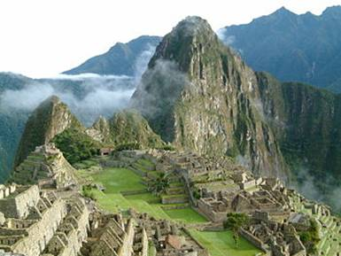
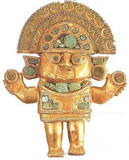
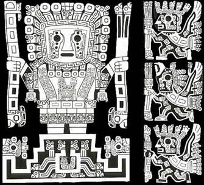
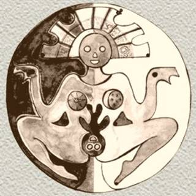
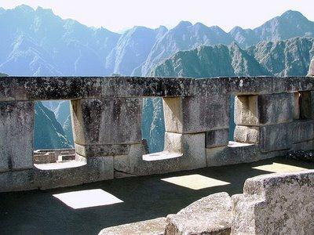
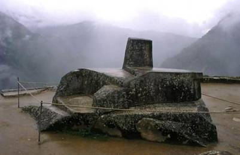
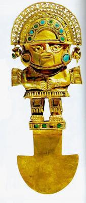

La cultura inca al igual que la maya son muestras de una sabiduría cósmica
para admirar. Algunos historiadores dicen que los Incas son una
prolongación de la cultura maya que se traslado hacia el sur. Más allá de
poder determinar fehacientemente de donde vinieron, lo importante creo es
rescatar las enseñanzas que dejaron.
Por ejemplo, en la forma de construir caminos y viviendas, desarrollaron un
estilo de alta funcionalidad en la arquitectura del pueblo, destacándose el
trabajo sobre piedras. Las construcciones más destacadas de las conocidas
son la gran fortaleza de Sacsayhuamán cerca de Cuzco. Y claro la
construcción más famosa de los Incas llena de palacios, templos, y
fortalezas emplazadas llamada Machu Picchu.

El pueblo Inca adoraba era adorador del Sol, al que llamaban Dios Inti. Los
emperadores Incas eran considerados como descendientes del dios Sol y eran
adorados como divinidades. El oro, símbolo del dios Sol, era muy explotado
para el uso de los dirigentes y miembros de la élite; no como moneda de
intercambio, sino principalmente con objetivos decorativos y rituales. La
religión dominaba toda la estructura política. Desde el Templo del Sol en
el centro de Cuzco, se podían trazar líneas imaginarias en dirección de los
lugares de culto de las diferentes clases sociales de la ciudad.
El "Calendario Inca" es un sistema de medición del tiempo empleado en
el Cuzco
hacia el siglo XV. Consta de 12 meses de treinta días cada uno,
dividido en tres semanas de 10 días. Este calendario fue determinado a
partir de la observación del sol y la luna.
El año, de 360 días, estaba dividido en 12 lunas de 30 días cada una. La
organización mítico-religiosa determinaba la sucesión en el calendario a
través de las 12 lunas. Correspondientes a festividades y actividades
cotidianas:
Luna de la Gran Fiesta del Sol, equivalente al mes de diciembre o descanso.
...
Pequeña Luna Creciente, enero, tiempo de ver el maíz creciendo.
Gran Luna Creciente, febrero, tiempo de vestir taparrabos.
Luna de la flor creciente, marzo, mes de maduración de la tierra.
Luna de las espigas gemelas, abril, mes de cosecha y descanso.
Luna de la cosecha, mayo, el maíz se seca para ser almacenado.
Luna de cosechas junio, cosecha de patata y descanso, roturación del suelo.
Luna de riego, julio, mes de redistribución de tierras.
Luna de siembra, agosto, mes de sembrar las tierras.
Luna de la fiesta de la Luna, septiembre, mes de plantar.
Luna de la fiesta de la provincia de Oma, octubre, tiempo de espantar a los
pájaros de los campos recién cultivados.
Luna de la fiesta de la provincia de Ayamarca, noviembre, tiempo de regar
los campos.
Si bien es notable la adoración al sol así como lo encontramos también en
la cosmovisión Andina, los Incas tenían un Dios principal que era el dios
del agua, los Incas conocían muy profundamente el elemento agua y
consideraban al sol como una energía que representaba al Dios del Agua, su
devoción era más profunda hacia el Dios del Agua, el que da el anima a
todas la cosas, el creador del universo conocido como Kon Tiqqi Wiracocha,
aun así, este nombre se encuentra en muchas de las culturas prehispánicas
que precedieron a la cultura Inca.

Kon Tiqqi Wiracocha era considerado como el origen, el esplendor, la luz,
el gran maestro del mundo. En realidad es la primera deidad que veneraron
los Incas y antiguos peruanos de diversos lugares especialmente los
Tiahuanacos que provenían del Lago Titicaca. Los Incas decían que Wiracocha
había surgido de las aguas y que él fue el creador del cielo y la tierra. A
este Dios se lo representa siempre con un pájaro al lado al que llamaban
Inti, un pájaro mago con conocimientos futuros, el picaflor de oro,
mensajero de los dioses cuyas plumas eran usadas para la confección de la
corona del emperador Inca.
Es interesante recordar que en la cultura de los mayas también hay una
deidad representada por un pájaro el quetzal, que acompañaba con la energía
espiritual a los gobernantes como Kukulcan, Quetzalcoatl, la serpiente
emplumada, príncipe maya que cristifico su alma.

La Pacha Mama llamada también Madre Tierra por todos los pueblos andinos,
fue y sigue siendo venerada por todos los pueblos del planeta. Los Incas la
consideraban la encargada de propiciar la fertilidad en los campos, por eso
todos los años se hacían ceremonias y ofrendas en su nombre para que los
alimentos nunca faltaran en la comunidad.
Los Incas y la arquitectura
La ciudadela de Machu Picchu ha sido por mucho tiempo uno de los más
inquietantes enigmas de nuestro pasado. Se ubica a algunos cientos de
metros sobre la margen izquierda del río Urubamba, a 2300 metros sobre el
nivel del mar. El primer aspecto que llama la atención es su ubicación, en
la cima de un cerro cubierto de vegetación y de difícil acceso. Este
aislamiento hizo posible que el sitio se mantuviera intacto por cientos de
años, desde su abandono hasta que Hiram Bingham, lo descubrió en 1911.
Para su estudio fue dividido en diferentes sectores, dependiendo de las
características, poco o muy elaboradas, de la arquitectura. Estos podían
ser el sector urbano, el agrícola, el religioso, etc. El sector agrícola
corresponde a un conjunto de terrazas o andenes perfectamente adaptados a
las abruptas laderas del cerro, y que se complementaban con canales.
Existe un ingreso principal resguardado por puestos de vigilancia, así como
una muralla que separa el sector agrícola del urbano.

En el sector religioso destacan el Templo de las Tres Ventanas y el
Intihuatana, o reloj solar, bloque de piedra con funciones astronómicas,
ubicado sobre una pirámide trunca.

Hacia el lado este, en la parte inferior de las terrazas, hay un
cementerio. Las excavaciones realizadas han sacado a la luz una serie de
entierros, de los cuales la gran mayoría eran de mujeres. Tal vez vivió
allí una reducida élite de sacerdotes rodeados por un grupo de mujeres
dedicadas al culto, las llamadas Vírgenes del Sol.
Medicina Inca

Como en otras culturas andinas e indígenas en general la medicina estaba
ligada a la magia y la religión. Ellos sostenían que todas las enfermedades
eran provocadas por el desprendimiento del espíritu del cuerpo, a causa de
un maleficio, un susto o un pecado.
En la actualidad nos estamos acercando nuevamente a la naturaleza y también
a ver la causa de las enfermedades de manera similar a sus visiones, ya que
se considera ahora que toda enfermedad viene de alguna emoción.
Además los curanderos incaicos, llegaron a realizar intervenciones
quirúrgicas, como trepanaciones, con el propósito de eliminar fragmentos de
huesos o armas, que quedaban incrustadas en el cráneo, luego de accidentes
o enfrentamientos bélicos. Uno de los instrumentos utilizados en la cirugía
inca, fue el "Tumi" o cuchillo de metal en forma de "T". Como anestesia se
usaba la coca y la chicha en grandes cantidades y se sabe que también
conocieron el uso de vendas.